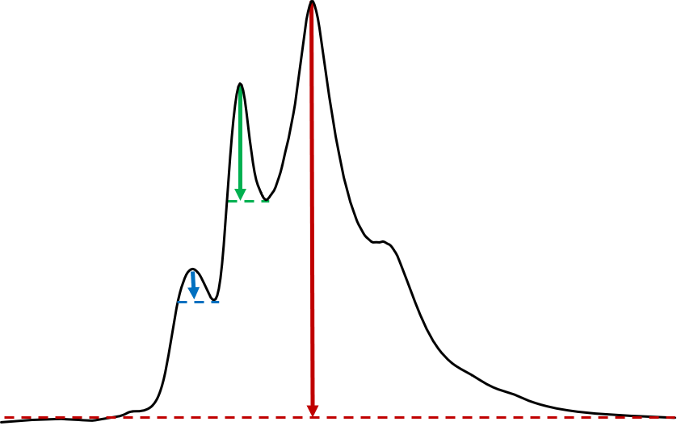
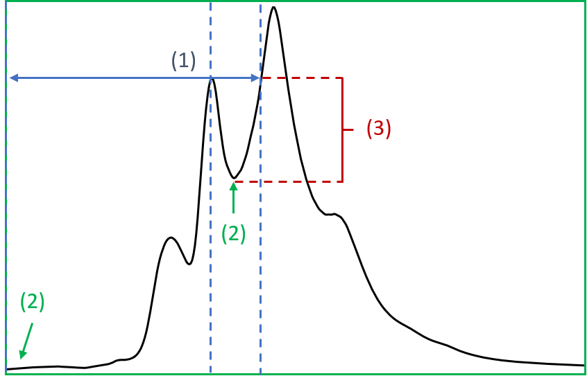
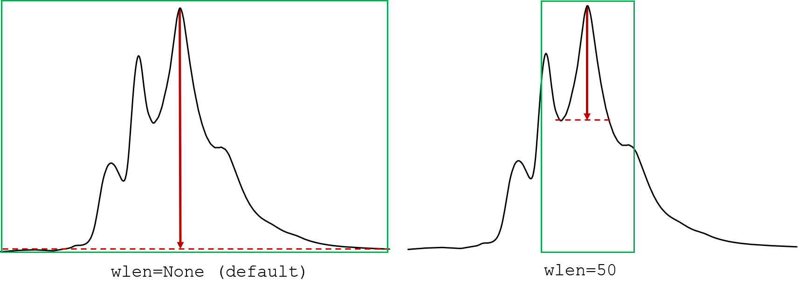
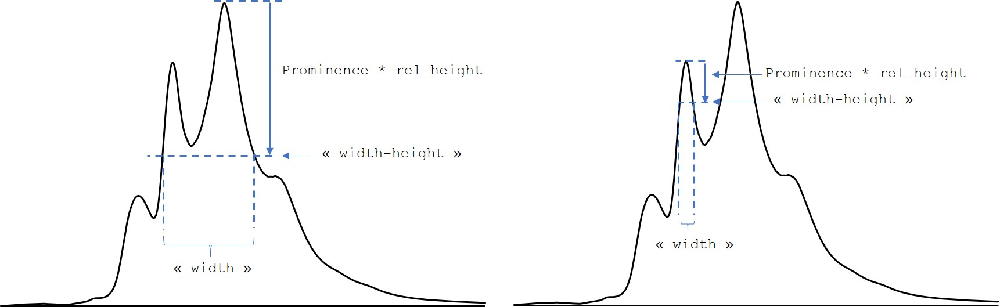

Peak Maxima Finding¶
This tutorial shows how to find peaks and determine peak maxima with spectrochempy. As prerequisite, the user is expected to have read the Import, Import IR, slicing tutorials.
Fist, as usual, we need to load the API.
[1]:
import spectrochempy as scp
![](data:image/png;base64,iVBORw0KGgoAAAANSUhEUgAAABgAAAAYCAYAAADgdz34AAAAAXNSR0IArs4c6QAAAAlw
SFlzAAAJOgAACToB8GSSSgAAAetpVFh0WE1MOmNvbS5hZG9iZS54bXAAAAAAADx4OnhtcG1ldGEgeG1sbnM6eD0iYWRvYmU6bnM6
bWV0YS8iIHg6eG1wdGs9IlhNUCBDb3JlIDUuNC4wIj4KICAgPHJkZjpSREYgeG1sbnM6cmRmPSJodHRwOi8vd3d3LnczLm9yZy8x
OTk5LzAyLzIyLXJkZi1zeW50YXgtbnMjIj4KICAgICAgPHJkZjpEZXNjcmlwdGlvbiByZGY6YWJvdXQ9IiIKICAgICAgICAgICAg
eG1sbnM6eG1wPSJodHRwOi8vbnMuYWRvYmUuY29tL3hhcC8xLjAvIgogICAgICAgICAgICB4bWxuczp0aWZmPSJodHRwOi8vbnMu
YWRvYmUuY29tL3RpZmYvMS4wLyI+CiAgICAgICAgIDx4bXA6Q3JlYXRvclRvb2w+bWF0cGxvdGxpYiB2ZXJzaW9uIDIuMS4wLCBo
dHRwOi8vbWF0cGxvdGxpYi5vcmcvPC94bXA6Q3JlYXRvclRvb2w+CiAgICAgICAgIDx0aWZmOk9yaWVudGF0aW9uPjE8L3RpZmY6
T3JpZW50YXRpb24+CiAgICAgIDwvcmRmOkRlc2NyaXB0aW9uPgogICA8L3JkZjpSREY+CjwveDp4bXBtZXRhPgqNQaNYAAAGiUlE
QVRIDY1We4xU1Rn/3XPuYx47u8w+hnU38hTcuoUEt/6D2y4RB0ME1BoEd9taJaKh9CFiN7YGp7appUAMNmktMZFoJTYVLVQ0smsy
26CN0SU1QgsuFAaW3WVmx33N677O6XfuyoIxTXqSO/fec+75fd93vt/3/UbDV0aKSZmCpkFMLz3T9utuu2N+o98aDSMBKVAo89z5
y+zEz3ZafcCOfvWdlGCalqKn1Bf71CygTd+mf1esSOnpdMpTb+vWpTZuWVfe3jLPa5tzHYNm0T5N0gpdkkHaDBeGBU6d1/t/fyS8
+/CbqdfUvmsx1PuMgc2bNxv79u1zgd31r+7JH1jbIZKxWRXAcYUQ8IWvBfBXNjEuJWPgMA02NR7C3/pYT9fjdZ3A9tGrWF8YSJHn
qcDz3y7q2T967PZv+gnYJdd1mEZ+62zGDQV/dQgKhmLzDNOXCEWM3j6eTT5Y3w78dOBKJLR1PQf+4ivPj76UPZnssBN+wbM9Aet/
AV81Mf1EEULXYfOobvX2WWQk0aoioXwwSmirOlioY0mu8BIouzYl7P8GV3vpqCCEZvlFz769w08oLDWvyKIyL1asSm28d6WfzA97
ztvvV1kexUMsmhlkULEkuGYmFYC6AvfUrITnwUKl5K79lkjeSSRRTCTbQPd95e1WzMbZSya74XoXAxctCllCnbECMOjZNGRwvzIX
nD85wbkMmKK+U045Dtdi8Qp+SAxU2GTg2bYlC9224pgvmSb54vkVTBQYyhUt2KjAMyMmPjwRQW5Mh2WKwJhlBh6jVGagFM84wZnQ
4bpC0Rt4pk1PbSt0NDcxDA5xryosDHWgtbM0DGZDWLSoiDMDYeQnGVrmOThxLozB0RAaahzkJzjKNqcIQBymJFMkOlN8Dqjpg0XY
Tx5xO/QbmmUrqIjGJznq47TqTaClKYfjp+PInLMwnOdYvtQBZ2XcunQY+VwIo4U4muoFEjVEFE6lQyEUKzHYfgQG9ylCyngU+Cxj
tOqxCDGHcCsOMCs6iQul5ZiStdATYxjMZXDLTUVwLY8Jey4uOh2IxjwsrP8UXJYxUrkZrghBahzV5iXU6gNkq0Z1EzIsUBUSCV2n
EOHo0LVxHCpuxabJJdhi5PFnvw5vLXwXIfNZvD/+JNo/X40NegE54sUaazl+UL8XD1x+FB9Ijjt4EQfdGN6J/x131LwIV9ap/AYs
0x1fz1ZKFbh6A7qKy/By9Dg6G36Ep91vUJJ15Cqr0Z67E8/HzmBrw1OwxWyM+3Mo6BAuSB17oyfx0Oyl2DN0Hqs/70Cx6hBCvESF
UY1ShWXZZEE7OTAYxZzaPH4TuoiusZvRnunFy2NbiHYuBp2vB66srX4vMEjpRKPxKXmnoQ4+Mn4DPiv8CYcrs3GfNUXJLtM+alSO
hrMj/KT+wBNW3+E/2liywNO3iSflbaFva/+stGDTxE0E9Sjaox8HBhxpEamzMGSEaFKg+mjEddzDh1MxTDq3YV1kGBsjfwW3S9Cq
anjmko+ndlb1UR3s6K8JlfphNWq9Ew/7c61T2BB/EbcaNkb8GBaE0tANH7/M34PLdhJDzjIcL9xPbdTG6zyM72Y+wXPHmvB489No
fm0b5HnbQ9Rgp/7DSSd29AeVvPeNyK6JcYl/yQVi5dBjuGvoV/gaJe47s45QUxrDmcYX0MBsdF7egvXZ7+O0vZA4X8QmOQWjlSK7
RDz5wIM30gp9UbWcGjXxhzdDu1SiNSpx6kcQB57rPnr/3dlkZarWLnlRq5oPET1dOCIOk4wALib9eeS5iygfhkd09H0DWphB/+gs
+PcOAS+ssrFmmXXgVfR0de9cpbAJfH3Q1jofW9DZk56dDcVsq9YcsoUMEd1qyLoT3BX1YiyHMJuk97hyjqIoE91t+NcTLeN0ZrfM
oXatZbu6G0h4VG+ibqq0IJVK6cAjo6serG3vSUezCMct0yQeSOFJSUImqb2qbknUpDqlZxE0QZ+ZUpSlZx79h4Nda6zef9dlk121
JDjbR5XggPRZlRnS6bRQRtLpn4++cuie/Yvn2svmNxuLw9WCcYIl4fEoTEGiSTUqJdfgU+8ROqf1iMkLzS389YtNPXc/PH8l8ONB
JZkHD+4JtD04HmVEDWWErmBhzV2/2LB1bemJG6krzv2S6NOHUgtEP0Oif5pE/3fHoruP7N8RiP61GArzSwbUhJJQpXJKiKbfr/3b
IhKq76sKPUdF9NW/LSqfSn6vjv8C45H/6FSgvZQAAAAASUVORK5CYII=)
|
SpectroChemPy's API - v.0.4.8.dev4 © Copyright 2014-2022 - A.Travert & C.Fernandez @ LCS |
Loading an experimental dataset¶
A typical IR dataset (CO adsorption on supported CoMo catalyst in the 2300-1900 cm-1 region) will be used throughout.
We load the data using the generic API method read (the type of data is inferred from the extension)
[2]:
ds = scp.read("irdata/CO@Mo_Al2O3.SPG")
[3]:
ds.y -= ds.y.data[0] # start time a 0 for the first spectrum
ds.y.title = "time"
ds.y = ds.y.to("minutes")
Let’s set some preferences for plotting
[4]:
prefs = ds.preferences
prefs.method_1D = "scatter+pen"
prefs.method_2D = "stack"
prefs.colorbar = True
prefs.colormap = "Dark2"
We select the desired region and plot it.
[5]:
reg = ds[:, 2300.0:1900.0]
_ = reg.plot()
Find maxima by manual inspection of the plot¶
For instance, after zooming on the highest peak of the last spectrum, one finds that it is located at ~ 2115.5 cm\(^{-1}\). The exact x-coordinate value can be obtained using the following code (see the slicing tutorial for more info):
[6]:
pos = reg.x[2115.5].values
pos
[6]:
We can easily get the list of all individual maximas at this position
[7]:
maximas = reg[:, pos].squeeze()
_ = maximas.plot(marker="s", ls="--", color="blue")
[8]:
ax = reg.plot()
x = pos.max()
y = maximas.max()
ax.set_ylim(-0.01, 0.3)
_ = ax.annotate(
f"{x:~0.2fP} {y:~.3fP}",
xy=(2115.5, maximas.max()),
xytext=(30, -20),
textcoords="offset points",
bbox=dict(boxstyle="round4,pad=.7", fc="0.9"),
arrowprops=dict(arrowstyle="->", connectionstyle="angle3"),
)
Find maxima with an automated method: find_peaks()¶
Exploring the spectra manually is useful, but cannot be made systematically in large datasets with many - possibly shifting peaks. The maxima of a given spectrum can be found automatically by the find_peaks() method which is based on scpy.signal.find_peaks(). It returns two outputs: peaks a NDDataset grouping the peak maxima (wavenumbers and absorbance) and properties a dictionary containing
properties of the returned peaks (it is empty if no particular option is selected, see below for more information).
Default behaviour¶
Applying this method on the last spectrum without any option will yield 7 peaks :
[9]:
last = reg[-1]
(
peaks,
_,
) = (
last.find_peaks()
) # we do not catch the second output (properties) as it is void in this case
peaks is a NDDataset. Its x attribute gives the peak position
[10]:
peaks.x.values
[10]:
| Magnitude | [2266.372512520944 2220.4467738921926 ... 2077.112675131113 2073.144019440136] |
|---|---|
| Units | cm-1 |
The code below shows how the peaks found by this method can be marked on the plot:
[11]:
ax = last.plot_pen() # output the spectrum on ax. ax will receive next plot too
pks = peaks + 0.01 # add a small offset on the y position of the markers
_ = pks.plot_scatter(
ax=ax,
marker="v",
color="black",
clear=False, # we need to keep the previous output on ax
data_only=True, # we dont need to redraw all things like labels, etc...
ylim=(-0.01, 0.35),
)
for p in pks:
x, y = p.x.values, p.values + 0.02
_ = ax.annotate(
f"{x.m:0.0f}",
xy=(x, y),
xytext=(-5, 0),
rotation=90,
textcoords="offset points",
)
Now we will do a peak-finding for the whole dataset:
[12]:
peakslist = [s.find_peaks()[0] for s in reg]
[13]:
ax = reg.plot()
for peaks in peakslist:
peaks.plot_scatter(
ax=ax,
marker="v",
ms=3,
color="red",
clear=False,
data_only=True,
ylim=(-0.01, 0.30),
)
It should be noted that this method finds only true maxima, not shoulders (!). For the detection of such underlying peaks, the use of methods based on derivatives or advanced detection methods - which will be treated in separate tutorial - are required. Once their maxima of a given peak have been found, it is possible, for instance, to plot its evolution with, e.g. the time. For instance for the peaks located at 2220-2180 cm\(^{-1}\):
[14]:
# Find peak's position
positions = [s.find_peaks()[0].x.values for s in reg[:, 2220.0:2180.0]]
# Make a NDDataset
evol = scp.NDDataset(positions, title="wavenumber at the maximum")
evol.x = scp.Coord(
reg.y, title="acquisition time"
) # the x coordinate is st to the acquisition time for each spectra
evol.preferences.method_1D = "scatter+pen"
# plot it
_ = evol.plot(ls=":")
Options of find_peaks()¶
The default behaviour of find_peaks() will return all the detected maxima. The user can choose various options to select among these peaks:
Parameters relative to “peak intensity”: - height: minimal required height of the peaks (single number) or minimal and maximal heights (sequence of two numbers) - prominence: minimal prominence of the peak to be detected (single number) or minimal and maximal prominence (sequence of 2 numbers). In brief the “prominence” of a peak measures how much a peak stands out from its surrounding and is the vertical distance between the peak and its lowest “contour line”. It should not be
confused with the height as a peak can have an important height but a small prominence when surrounded by other peaks (see below for an illustration). - in addition to the prominence, the user can define wlen, the width (in points) of the window used to look at neighboring minima, the peak maximum being is at the center of the window. - threshold: a single number (the minimal required threshold) or a sequence of two numbers (minimal and maximal). The thresholds are the difference of
height of the maximum with its two neighboring points (useful to detect spikes for instance)
Parameters relative to “peak spacing”: - distance: the required minimal horizontal distance between neighbouring peaks. Smaller peaks are removed first. - width: Required minimal width of peaks in samples (single number) or minimal and maximal width. The width is assessed from the peak height, prominence and neighboring signal. - In addition the user can define rel_height (a float between 0. and 1.) used to compute the width - see the scipy
documentation for further details. - Finally, we mention en passant a last parameter, plateau_size() used for selecting peaks having truly flat tops ( as in e.g. square-boxed signals).
The use of some of these options for the last spectrum of the dataset is exemplified in the following:
[15]:
s = reg[-1].squeeze()
# we use squeeze it because one of the dimensions for this dataset of shape (1, N) is useless
[16]:
# default settings
peaks, properties = s.find_peaks()
ax = s.plot_pen(color="black")
peaks.plot_scatter(
ax=ax, label="default", marker="v", ms=4, color="black", clear=False, data_only=True
)
# find peaks heights than 0.05 (NB: the spectra are shifted for the display.
# Refer to the 1st spectrum for true heights)
peaks, properties = s.find_peaks(height=0.05)
color = "blue"
label = "0.05<height"
offset = 0.05
(s + offset).plot_pen(color=color, clear=False)
(peaks + offset).plot_scatter(
ax=ax, label=label, m="v", mfc=color, mec=color, ms=5, clear=False, data_only=True
)
# find peaks heights between 0.05 and 0.2 (the highest peak won't be detected)
peaks, properties = s.find_peaks(height=(0.05, 0.2))
color = "green"
label = "0.05<height<0.2"
offset = 0.1
(s + offset).plot_pen(color=color, clear=False)
(peaks + offset).plot_scatter(
ax=ax, label=label, m="v", mfc=color, mec=color, ms=5, clear=False, data_only=True
)
# find peaks with prominence >= 0.05 (only the two most prominent peaks are detected)
peaks, properties = s.find_peaks(prominence=0.05)
color = "purple"
label = "prominence=0.05"
offset = 0.15
(s + offset).plot_pen(color=color, clear=False)
(peaks + offset).plot_scatter(
ax=ax, label=label, m="v", mfc=color, mec=color, ms=5, clear=False, data_only=True
)
# find peaks with distance >= 10 (only the highest of the two maxima at ~ 2075 is detected)
peaks, properties = s.find_peaks(distance=10)
color = "red"
label = "distance>10"
offset = 0.20
(s + offset).plot_pen(color=color, clear=False)
(peaks + offset).plot_scatter(
ax=ax, label=label, m="v", mfc=color, mec=color, ms=5, clear=False, data_only=True
)
# find peaks with width >= 10 (none of the two maxima at ~ 2075 is detected)
peaks, properties = s.find_peaks(width=10)
color = "grey"
label = "width>10"
offset = 0.25
(s + offset).plot_pen(color=color, clear=False)
(peaks + offset).plot_scatter(
ax=ax, label=label, m="v", mfc=color, mec=color, ms=5, clear=False, data_only=True
)
_ = ax.legend()
More on peak properties¶
If the concept of “peak height” is pretty clear, it is worth examining further some peak properties as defined and used in find_peaks(). They can be obtained (and used) by passing the parameters height, prominence, threshold and width. Then find_peaks() will return the corresponding properties of the detected peaks in the properties dictionary.
Prominence¶
The prominence of a peak can be defined as the vertical distance from the peak’s maximum to the lowest horizontal line passing through a minimum but not containing any higher peak. This is illustrated below for the three most prominent peaks of the above spectra:

Let’s illustrate this for the second-highest peak which height is comprised between ~ 0.15 and 0.22 and see which properties are returned when, on top of height, we pass prominence=0: this will return the properties associated to the prominence and warrant that this peak will not be rejected on the prominence criterion.
[17]:
peaks, properties = s.find_peaks(height=(0.15, 0.22), prominence=0)
properties
[17]:
{'peak_heights': [0.19945645332336426 <Unit('absorbance')>],
'prominences': [0.06890010833740234 <Unit('absorbance')>],
'left_bases': [2299.7344161413444 <Unit('centimeter^-1')>],
'right_bases': [2142.561791474242 <Unit('centimeter^-1')>]}
The peak prominence is 0.0689, a much lower value than the height (0.1995), as could be expected by the illustration above.
The algorithm used to determine the left and right ‘bases’ is illustrated below: - (1) extend a line to the left and right of the maximum until it reaches the window border (here on the left) or the signal (here on the right). - (2) find the minimum value within the intervals defined above. These points are the peak’s bases. - (3) use the higher base (here the right base) and peak maximum to calculate the prominence.

The following code shows how to plot the maximum and the two “base points” from the previous output of find_peaks():
[18]:
ax = s.plot_pen()
# plots the maximum
_ = peaks.plot_scatter(
ax=ax, marker="v", mfc="green", mec="green", data_only=True, clear=False
)
wl, wr = properties["left_bases"][0], properties["right_bases"][0]
# wavenumbers of of left and right bases
for w in (wl, wr):
ax.axvline(w, linestyle="--") # add vertical line at the bases
ax.plot(w, s[w].data, "v", color="red")
# and a red mark #TODO: add function to plot this easily
ax = ax.set_xlim(2310.0, 1900.0) # change x limits to better see the 'left_base'
We can check that the correct value of the peak prominence is obtained by the difference between its height and the highest base, here the ‘right_base’:
[19]:
prominence = peaks[0].values - s[wr].values
print(f"calc. prominence = {prominence:0.4fK}")
calc. prominence = 0.0690 absorbance
Finally, the figure below shows how the prominence can be affected by wlen, the size of the window used to determine the peaks’ bases.

As illustrated above a reduction of the window should reduce the prominence of the peak. This impact can be checked with the code below:
[20]:
peak, properties = s.find_peaks(height=0.2, prominence=0)
print(f"prominence with full spectrum: {properties['prominences'][0]:0.4fK}")
peak, properties = s.find_peaks(
height=0.2, prominence=0, wlen=50.0
) # a float should be explicitly passed, else will be considered as points
print(f"prominence with reduced window: {properties['prominences'][0]:0.4fK}")
prominence with full spectrum: 0.2465 absorbance
prominence with reduced window: 0.1161 absorbance
Width¶
The find_peaks() method also returns the peak widths. As we will see below, the method is very approximate and more advanced methods (such as peak fitting), also implemented in spectrochempy should be used (see e.g., this example). On the other hand, the magnitude of the width is generally fine.
This estimate is based on an algorithm similar to that used for the “bases” above, except that the horizontal line starts from a width_height computed from the peak height subtracted by a fraction of the peak prominence defined bay rel_height (default = 0.5). The algorithm is illustrated below for the two most prominent peaks:

When the width keyword is used, properties dictionary returns the prominence parameters (as it is used for the calculation of the width), the width and the left and right interpolated positions (“ips”) of the intersection of the horizontal line with the spectrum:
[21]:
peaks, properties = s.find_peaks(height=0.2, width=0)
properties
[21]:
{'peak_heights': [0.24812382459640503 <Unit('absorbance')>],
'prominences': [0.24650186859071255 <Unit('absorbance')>],
'left_bases': [2299.7344161413444 <Unit('centimeter^-1')>],
'right_bases': [1899.5709852404398 <Unit('centimeter^-1')>],
'widths': [75.16388134369815 <Unit('centimeter^-1')>],
'width_heights': [0.12487289030104876 <Unit('absorbance')>],
'left_ips': [2166.0504707928103 <Unit('centimeter^-1')>],
'right_ips': [2090.8865894491123 <Unit('centimeter^-1')>]}
The code below shows how these data can be extracted and then plotted:
[22]:
# extraction of data (for better readability of the code below)
height = properties["peak_heights"][0]
width_height = properties["width_heights"][0]
wl = properties["left_ips"][0]
wr = properties["right_ips"][0]
ax = s.plot_pen()
_ = peaks.plot_scatter(
ax=ax, marker="v", mfc="green", mec="green", data_only=True, clear=False
)
_ = ax.axhline(height, linestyle="--", color="blue")
_ = ax.axhline(width_height, linestyle="--", color="red")
_ = ax.axvline(wl, linestyle="--", color="green")
_ = ax.axvline(wr, linestyle="--", color="green")
It is obvious here that the peak width is overestimated in the present case due to the presence of the second peak on the left. Here a better estimate would be obtained by considering the right half-width, or reducing the rel_height parameter as shown below.
A code snippet to display properties¶
The self-contained code snippet below can be used to display in a matplotlib plot and print the various peak properties of a single peak as returned by find_peaks():
[23]:
# user defined parameters ------------------------------
s = reg[-1] # define a single-row NDDataset
s.preferences.method_1D = "pen"
# peak selection parameters; should be set to return a single peak
height = 0.08 # minimal height or min and max heights)
prominence = 0.0 # minimal prominence or min and max prominences
width = 0.0 # minimal width or min and max widths
threshold = None # minimal threshold or min and max threshold)
# prominence and width parameter
wlen = None # the length of the window used to compute the prominence
rel_height = 0.47 # the fraction of the prominence used to compute the width
# code: find peaks, plot and print properties -------------------
peaks, properties = s.find_peaks(
height=height,
prominence=prominence,
wlen=wlen,
threshold=threshold,
width=width,
rel_height=rel_height,
)
table_pos = " ".join([f"{peaks[i].x.value.m:>10.3f}" for i in range(len(peaks))])
print(f'{"peak_position (cm⁻¹)":>26}: {table_pos}')
for key in properties:
table_property = " ".join(
[f"{properties[key][i].m:>10.3f}" for i in range(len(peaks))]
)
title = f"{key:>.16} ({properties[key][0].u:~P})"
print(f"{title:>26}: {table_property}")
ax = s.plot()
peaks.plot_scatter(
ax=ax, marker="v", mfc="green", mec="green", data_only=True, clear=False
)
for i in range(len(peaks)):
for w in (properties["left_bases"][i], properties["right_bases"][i]):
ax.plot(w, s[0, w].data.T, "v", color="red")
for w in (properties["left_ips"][i], properties["right_ips"][i]):
ax.axvline(w, linestyle="--", color="green")
peak_position (cm⁻¹): 2186.058 2157.805 2115.084 2077.113 2073.144
peak_heights (a.u.): 0.090 0.199 0.248 0.106 0.106
prominences (a.u.): 0.018 0.069 0.247 0.000 0.001
left_bases (cm⁻¹): 2299.734 2299.734 2299.734 2078.921 2075.064
right_bases (cm⁻¹): 2173.418 2142.562 1899.571 2075.064 1899.571
widths (cm⁻¹): 12.746 10.623 47.242 1.180 1.968
width_heights (a.u.): 0.081 0.167 0.132 0.105 0.106
left_ips (cm⁻¹): 2191.976 2162.881 2140.474 2077.730 2074.135
right_ips (cm⁻¹): 2179.230 2152.258 2093.232 2076.549 2072.168
– this is the end of this tutorial –